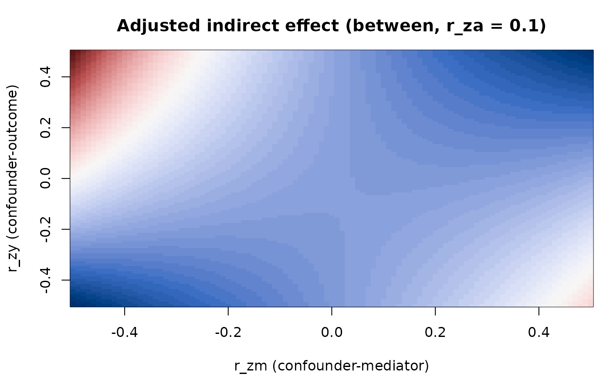

Sensitivity of a Multilevel Indirect Effect to an Omitted Confounder
Source:R/ml_omitted_confounder.R
ml_omitted_confounder.RdSensitivity analysis for an omitted confounder Z of the mediator-outcome
relation in a two-level 1-1-1 mediation model (treatment A, mediator M
and outcome Y, all measured at level 1), after Tofighi and Kelley (2016).
For each level the unmeasured, standardized confounder is described by its
correlations with the treatment, mediator and outcome (r_za, r_zm,
r_zy), the sensitivity parameters. The adjusted paths are
a = a* - d_MZ * d_ZA and b = b* - d_YZ * s_ZM, where a* and b* are
the supplied (unadjusted) estimates, d_ZA is the slope of Z on A,
d_MZ is the coefficient of Z in the regression of M on A and Z,
s_ZM is the coefficient of M in the regression of Z on A and M, and
d_YZ is the coefficient of Z in the regression of Y on A, M and
Z. These coefficients are obtained from the observed covariance matrix of
A, M and Y together with the sensitivity correlations. The adjusted
indirect effect is a * b.
Arguments
- between, within
Lists describing the between-cluster and within-cluster levels (see Details). At least one is required.
- r_za
Correlation(s) of the confounder with the treatment: a numeric vector, or a list with elements
betweenand/orwithin.- r_zm, r_zy
Numeric vectors of correlations of the confounder with the mediator and the outcome.
- screen
"pd"(default) keeps only admissible points;"none"keeps every grid point.- var_order
Character vector, a permutation of
c("A", "M", "Y"), giving the row and column order of the supplied matrices.
Value
An MLOmittedConfounder object with properties grid (one row per
level and grid point: level, r_za, r_zm, r_zy, a_adj, b_adj,
ab_adj, r2, admissible), ranges (minimum and maximum adjusted
indirect effect and where they occur, per level and r_za, with the
number of admitted points), unadjusted, screen, inputs and call.
It has print, summary, plot and as.data.frame methods.
Details
Inputs. Each level is a list with the unadjusted estimates a (the
A to M path) and b (the M to Y path, adjusting for A) and the
observed covariance matrix of A, M and Y at that level, given either as
cov or as cor together with sd. Rows and columns follow var_order.
If the matrix has dimnames they must equal var_order; otherwise they are
absent. The supplied a and b need not equal the values implied by the
covariance matrix (the published example does not). The function subtracts a
covariance-derived bias term from the supplied estimates, so the result is
the supplied estimate adjusted by that term, not a refit.
Assumption. As in the published illustration, the covariance between the
level-2 random slopes of the a and b paths is taken to be zero; it is not
estimated.
Screen. A grid point is admissible when the augmented 4 by 4 correlation
matrix of A, M, Y and Z is positive definite, equivalently
r' R^-1 r < 1 with r = (r_za, r_zm, r_zy) and R the observed
correlation matrix; this quantity is returned as r2 in the grid. With
screen = "pd" (the default) points that are not admissible get NA for
the adjusted paths. The default does not reproduce the published
tables: the endpoints printed by Tofighi and Kelley (2016) are computed over
the whole grid, which corresponds to screen = "none". With the published
example, the default shrinks the between-level ranges.
Sensitivity grids. r_za may be a single numeric vector (used for every
supplied level) or a list with elements between and/or within. A level
named in the list must have data, and a level with data must be named.
r_zm and r_zy are the grid of confounder correlations with the mediator
and outcome. All correlations must be finite with absolute value below 1.
Points where a regression block is numerically singular return NA.
References
Tofighi, D., & Kelley, K. (2016). Assessing omitted confounder bias in multilevel mediation models. Multivariate Behavioral Research, 51(1), 86-105. doi:10.1080/00273171.2015.1105736
Examples
# Synthetic between-cluster level: correlation matrix of A, M, Y and SDs
R <- matrix(c(1, .3, .2, .3, 1, .4, .2, .4, 1), 3)
res <- ml_omitted_confounder(
between = list(a = 0.3, b = 0.4, cor = R, sd = c(1, 1, 1)),
r_za = c(0, 0.1)
)
res
#> Omitted-confounder sensitivity (Tofighi & Kelley, 2016)
#> =======================================================
#> Unadjusted indirect effect:
#> between 0.1200
#> Screen: pd
#> Points with a non-positive-definite augmented matrix are NA; use
#> screen = "none" to reproduce the published tables.
#> Adjusted indirect effect by level and r_za:
#> between r_za = 0 ab_adj 0.0488 to 0.2761 (admitted 10201 of 10201)
#> between r_za = 0.1 ab_adj 0.0441 to 0.3463 (admitted 10201 of 10201)
#> Assumption: the covariance of the level-2 random slopes of a and b is zero.
summary(res)
#> Omitted-confounder sensitivity: summary
#> Ranges of the adjusted indirect effect:
#> level r_za min max argmin_r_zm argmin_r_zy argmax_r_zm argmax_r_zy
#> between 0.0 0.04882 0.2761 -0.5 -0.5 0.5 -0.5
#> between 0.1 0.04411 0.3463 -0.5 -0.5 -0.5 0.5
#> n_admitted n_total
#> 10201 10201
#> 10201 10201
#>
#> Points where the adjusted effect changes sign relative to the unadjusted effect
#> (weakest = flipping point with the smallest r_zm^2 + r_zy^2):
#> level r_za n_flip share_flip weakest_r_zm weakest_r_zy
#> between 0.0 0 0 NA NA
#> between 0.1 0 0 NA NA
head(as.data.frame(res))
#> level r_za r_zm r_zy a_adj b_adj ab_adj r2 admissible
#> 1 between 0 -0.50 -0.5 0.3 0.1627373 0.04882118 0.3924802 TRUE
#> 2 between 0 -0.49 -0.5 0.3 0.1681858 0.05045575 0.3844274 TRUE
#> 3 between 0 -0.48 -0.5 0.3 0.1735190 0.05205570 0.3766280 TRUE
#> 4 between 0 -0.47 -0.5 0.3 0.1787463 0.05362389 0.3690818 TRUE
#> 5 between 0 -0.46 -0.5 0.3 0.1838765 0.05516295 0.3617889 TRUE
#> 6 between 0 -0.45 -0.5 0.3 0.1889178 0.05667534 0.3547493 TRUE
plot(res, r_za = 0.1)
